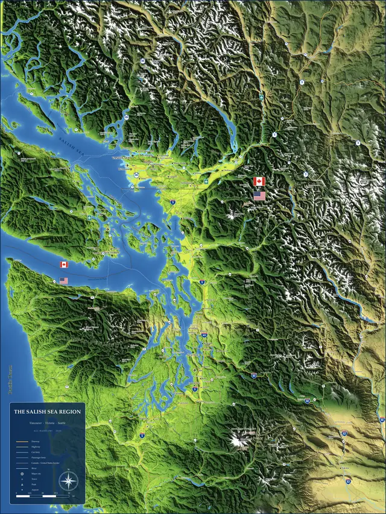
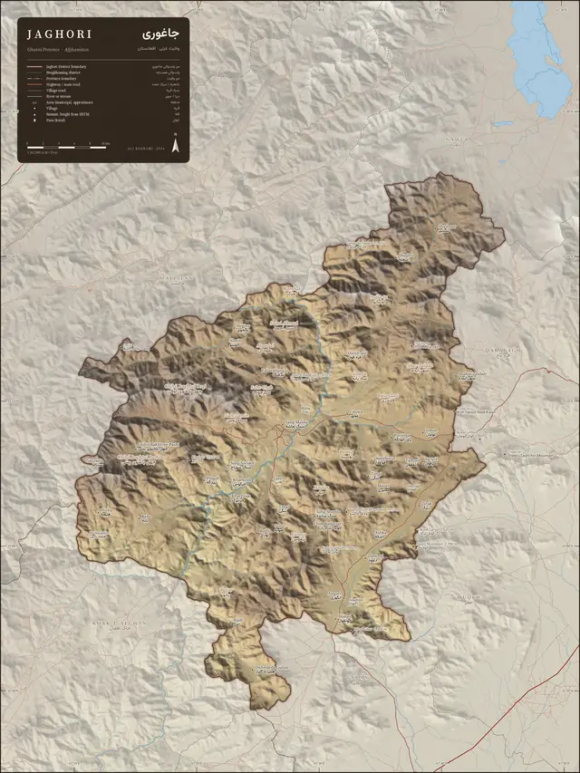

hi, ali here.
Ali Bahrami · Data engineer · Databricks, Azure, GCP
I build lakehouses, pipelines, and the AI agents that run on them. I can crunch your numbers, and tell you a good story about them.
about
I design lakehouses and warehouses, build batch and streaming pipelines, and turn raw data into answers people use. Lately that includes AI agents on top of the data, on Microsoft Fabric, Databricks Mosaic AI, and Google Vertex AI. It started with Lego, Stronghold Crusader, and chess. Same instinct, bigger blocks.
I started school in a refugee camp in Pakistan, had my first English class in Bangkok, and studied economics at NYU Abu Dhabi and NYU Stern. Along the way I taught Persian, English, Hindi, Arabic, Mandarin, and programming. I am based in Vancouver, BC.
Off the clock: Pacific Northwest mountains, chess, collecting maps, and colonial and post-colonial literature.
experience
Data Engineer @ Beatport
May 2026 to now · Remote (Los Angeles)
- Own the royalties and finance pipelines on GCP end to end: Airflow, BigQuery, dbt, Looker, plus monitoring and access control.
- Reconcile $1.5M+ in royalty discrepancies by tracing mismatches across source systems, warehouse models, and partner statements.
- Migrate legacy Pentaho and Jenkins ETL onto Airflow, BigQuery, and dbt.
- Keep partner integrations running over APIs, SFTP, and GCS, and catch load failures before they reach reports.
- Train engineers to work with AI assistants through a standard AI workspace setup.
Data Engineer @ Canfor
Jan 2025 to May 2026 · Vancouver
- Built a Microsoft Fabric lakehouse (bronze, silver, gold) taking in 10M+ rows a day with PySpark and Spark SQL, orchestrated in Azure Data Factory. ETL ran 75% faster, and retiring legacy servers saved $190K.
- Executive KPI reporting on a Kimball model in Azure SQL and Power BI, cutting turnaround from days to hours.
- Two-tier analytics for an operations-planning app: a lakehouse for reporting and Azure SQL for real-time data.
- Wrote the Fabric governance: naming, reusable code patterns, access, and version control in Azure DevOps and Git.
Data Analyst @ Canfor
Feb 2023 to Jan 2025 · Vancouver
- Version-controlled ETL on Azure Synapse and Delta Lake with PySpark and Spark SQL.
- Power BI dashboards for Finance, Safety, Marketing, and Market Intelligence.
- Helped move legacy ETL and reporting to the cloud, and automated manual work with Python, Data Factory, and Power Automate.
Data Analyst, Telecommunications @ Ledcor
Feb 2022 to Feb 2023 · Vancouver
- Built ETL, pipelines, dashboards, and KPI boards for the Telecom/Drops program in Python, SQL, and Power BI.
- Reconciled costs and revenue to close a $500K gap in the invoicing system, with data audits and ad hoc reports.
BA Economics (Finance) @ New York University
2016 to 2021 · Abu Dhabi and New York
- Full scholarship at NYU Abu Dhabi.
- Studied in the UAE, the US, Greece, Nepal, and Jordan.
- Statistics, econometrics, financial analysis, Python, linear algebra.
projects
Sales lead scoring
Which leads turn into customers, from open sales data.
Duplicate questions
NLP to find duplicate questions in Quora's dataset.
Flight delays
Supervised learning to predict how late a flight will be.
Loan approvals
Predicting approval from applicant data.
Banking behavior
Segmenting a bank's customers by demographics and habits.
Football, 1872 to today
Exploring a century and a half of international matches.
Data wrangling with APIs
Yelp and Google APIs.
maps


Salish Sea
Shaded relief print, 18 × 24 in.
SRTM v4.1 (CGIAR-CSI), GSHHG, Natural Earth.


Jaghori, Afghanistan
Shaded relief print, 18 × 24 in, English and Persian labels.
OCHA COD-AB, SRTM v4.1, OpenStreetMap.